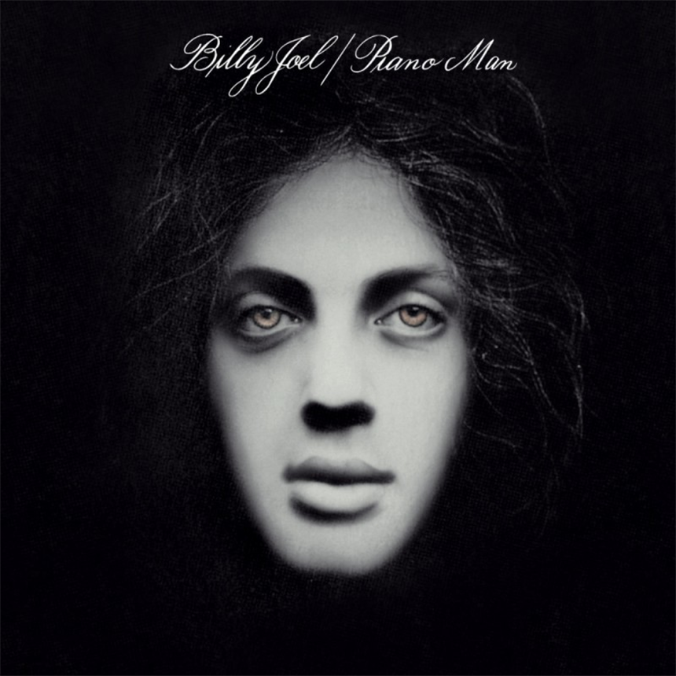

안녕하세요 라보엠입니다.
오늘은 빌리 조엘(Billy Joel)의 대표적인 명곡 피아노맨 Piano Man (1973)을 소개해드리겠습니다. 엘튼 존 별명이 로켓맨이 되었듯이, 피아노 연주도 직접한 빌리 조엘은 이 곡으로 피아노맨이라는 별명을 평생 달고 살았습니다. A-A' 정도의 정말 단순한 구조로 Piano Man 만큼 유명한 곡이 있을까 싶습니다.
Billy Joel - Piano Man (Official HD Video)
Billy Joel - Piano Man 가사와 해석
1.
It's nine o'clock on a Saturday
The regular crowd shuffles in
There's an old man sittin' next to me
Makin' love to his tonic and gin
토요일 9시
사람들이 모여듭니다
내 옆에는 노인이 앉아 있습니다
토닉과 진에 빠져있는 사람이죠
He says, "Son can you play me a memory?
I'm not really sure how it goes
But it's sad and it's sweet and I knew it complete
When I wore a younger man's clothes"
그가 얘기하길 "젊은이 추억의 노래 한 곡 들려주게
정확히 어떤 곡인지 생각나진 않는데,
슬프면서도 달콤해서 내가 아는 완벽한 노래였지
내가 젊은 시절이었을 때 말이야"
La, la-la, di-di-da
La-la di-di-da da-dum
chor.
Sing us a song, you're the piano man
Sing us a song tonight
Well, we're all in the mood for a melody
And you've got us feelin' alright
노래를 불러줘요 피아노맨
오늘 밤 노래를 불러주세요
음, 우리는 모두 멜로디에 취해있어요
당신이 우리를 기분 좋게 만들었어요
2.
Now John at the bar is a friend of mine
He gets me my drinks for free
And he's quick with a joke, or to light up your smoke
But there's some place that he'd rather be
바에 있는 John은 내 친구에요
그는 나에게 공짜로 술을 줍니다
그는 농담도 잘 하고, 담배불도 빠르게 붙여줍니다.
하지만, 그가 하고 싶은 일은 따로 있어요.
He says, "Bill, I believe this is killing me"
As a smile ran away from his face
"Well, I'm sure that I could be a movie star
If I could get out of this place"
John이 말하길, "빌, 이 일이 나를 좀 먹고 있어"
얼굴에 미소가 사라진채로 말이죠.
"글쎄 나는 분명 유명한 영화배우가 될 거야,
이 곳에서 벗어날 수 있다면 말이지"
Oh, la, la-la, di-di-da
La-la di-di-da da-dum
3.
Now Paul is a real estate novelist
Who never had time for a wife
And he's talkin' with Davy, who's still in the navy
And probably will be for life
이제 폴 차례네요, 그는 부동산 중계업자이며 소설가입니다.
바빠서 아내와 함께할 시간도 없어요.
그리고 해군인 Davy 와 함께 이야기하고 있는데,
아마도 평생 저럴 것 같네요.
And the waitress is practicing politics
As the businessmen slowly get stoned
Yes, they're sharing a drink they call loneliness
But it's better than drinkin' alone
그리고, 웨이트리스는 일을 잘 해요
사업가들이 천천히 취해가는 걸 보면 말이에요.
네, 그들은 외로움이라는 술을 함께 마시고 있습니다.
하지만, 혼술보다는 낫죠.
(int.)
chor.
Sing us the song, you're the piano man
Sing us a song tonight
Well, we're all in the mood for a melody
And you've got us feelin' alright
노래를 불러줘요 피아노맨
오늘 밤 노래를 불러주세요
음, 우리는 모두 멜로디에 취해있어요
당신이 우리를 기분 좋게 만들었어요
4.
It's a pretty good crowd for a Saturday
And the manager gives me a smile
'Cause he knows that it's me they've been comin' to see
To forget about life for a while
토요일에 손님이 꽤 많습니다.
지배인이 저에게 웃음 짓습니다.
사람들이 저를 보려고 왔다는 걸 알고 있거든요
잠시라도 힘든 삶을 잊기 위해서 말이에요.
And the piano, it sounds like a carnival
And the microphone smells like a beer
And they sit at the bar and put bread in my jar
And say man what are you doin' here?
그리고, 피아노 소리는 축제같고,
마이크에는 맥주 냄새가 나고,
사람들은 바에 앉아 저에게 팁을 주고,
아직도 여기에 있어? 라고 말합니다.
Oh, la, la-la, di-di-da
La-la di-di-da da-dum
chor.
Sing us the song, you're the piano man
Sing us a song tonight
Well, we're all in the mood for a melody
And you've got us feelin' alright
노래를 불러줘요 피아노맨
오늘 밤 노래를 불러주세요
음, 우리는 모두 멜로디에 취해있어요
당신이 우리를 기분 좋게 만들었어요
Billy Joel - Piano Man 간단 감상평
가사를 해석하며 노래 가사를 곱씹어 보고, 뮤직비디오도 다시 봤는데, 빌리 조엘 자신의 이야기와, 그 시대의 이야기가 잘 녹아 있어서 명곡은 명곡이구나 느꼈습니다.
빌리 조엘이 엘튼 존의 Yellow Brick Road 를 즐겨 불렀듯이 엘튼존도 빌리조엘의 피아노맨을 자주 불렀습니다.